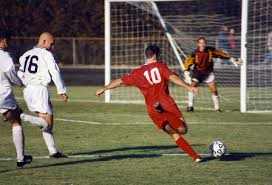

Football is a family of team sports which object is to get the ball over a goal line, into a goal, or between
goalposts using merely the body (by carrying, throwing, or kicking).[1][2][3]
Unqualified, the word football generally means the form of football that is the most popular where the word
is
Sports commonly called football include association football (known as soccer in Australia, Canada,
South Africa, the United States, and sometimes in Ireland and New Zealand); Australian rules football;
Gaelic
football;
gridiron football (specifically American football, arena football, or Canadian football);
International rules football; rugby league football; and rugby union football.[4] These various forms of
football share,
to varying degrees, common origins and are known as "football codes".
